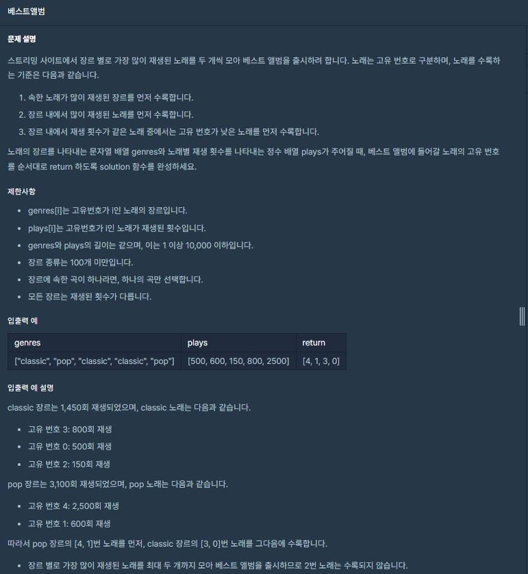

소요시간 1시간 40분
정확도 (100/100)

genres = ["classic", "pop", "classic", "classic", "pop"]
plays =[500, 600, 150, 800, 2500]
let totalPlay = new Map();
genres.forEach((e,i) => {
totalPlay.set(genres[i], (totalPlay.get(genres[i])|0) + plays[i]);
});
// totalPlay를 아래와 같이 만들어준다.
// Map {
// 장르1(key) => 총 재생 횟수(value)
// 장르2(key) => 총 재생 횟수(value)
// ...
// }
//totalPlay.set(장르, (totalPlay의 value를 받아오거나 0)에다가 'play[i]'(재생횟수)를 더해준다.)
//결국 forEach문을 통해 genres 배열을 탐색하면서 각 장르의 재생 횟수들을 모두더해줌.
// 장르 별 총 재생 횟수 출력
console.log(totalPlay);
Map(2) { 'classic' => 1450, 'pop' => 3100 }
let total = Array.from(totalPlay.keys()); // totalPlay는 총 재생 횟수를 갖는 map이기 때문에 중복 값이 없으므로
// totalPlay의 key(장르)들을 가져와서 배열로 생성한다.
let js = {}; // 제이슨 형태로 해당 장르에서 첫번째로 가장 많이 들은 곡과
// 두번째로 가장 많이 들은 곡을 추출하기 위해 빈 제이슨 생성
total.forEach((e,i) => { // 장르를 가지고 있는 total 배열을 탐색하며
js[e] = { // js[장르] = {first: [0,0], second[0,0]} 형태로 장르별 JSON 생성
first: [0,0], // 여기서 배열 [0,0]은 각각 [plays에서의 인덱스, 플레이 횟수]
second: [0,0]
};
});
// 1,2번째 횟수들 생성
genres.forEach((e,i) => { // 각 장르의 각 곡마다의 인덱스 번호와 재생횟수를 가져오기 위해
if(js[e]["first"][1] < plays[i]){ // genres 배열을 탐색한다.
let tmp =js[e]["first"] // js[장르][first] = [인덱스,플레이 횟수]
// if(js[장르][first]의 재생횟수가 현재 인덱스의 재생 횟수보다 작다면)
js[e]["first"] = [i,plays[i]]; // js[장르][first]항목의 값을 현재 인덱스 및 플레이 횟수로 바꿔준다.
js[e]["second"] = tmp; // 그리고 현재 first항목의 값들을 second에 넣어준다 (원래는 제일 컸었으니까)
} else if (js[e]["second"][1] <plays[i]){ // first보다 작지만 second보다 큰 경우 현재 값들을 second에 넣어준다.
js[e]["second"] = [i,plays[i]];
}
});
console.log(js);
genres = ["classic", "pop", "classic", "classic", "pop"]
plays =[500, 600, 150, 800, 2500]
total.forEach를 통해 만들어지는 JSON 형태
{
classic: { first: [ 0, 0 ], second: [ 0, 0 ] },
pop: { first: [ 0, 0 ], second: [ 0, 0 ] }
}
genres.forEach를 통해 만들어지는 JSON 형태
{
classic: { first: [ 3, 800 ], second: [ 0, 500 ] },
pop: { first: [ 4, 2500 ], second: [ 1, 600 ] }
}
// 장르 별 총 재생 횟수 내림차순
total.sort((a, b) => totalPlay.get(b)-totalPlay.get(a));
let answer = [];
total.forEach((e,i) => {
answer.push(js[e]["first"][0]); // 한 곡이라도 있을 경우에만 total에 들어가므로 first는 조건 없이 push
if(js[e]["second"][1]){ // js[e]["second"][1] (그 장르의 두번째로 많이 재생한 횟수)가 0 이면
answer.push(js[e]["second"][0]); // 그 장르의 음악은 한 가지 이므로 push하지 않음
}
});
return answer;
재생 횟수 내림 차순
[ 'pop', 'classic' ]
[4, 1, 3, 0]